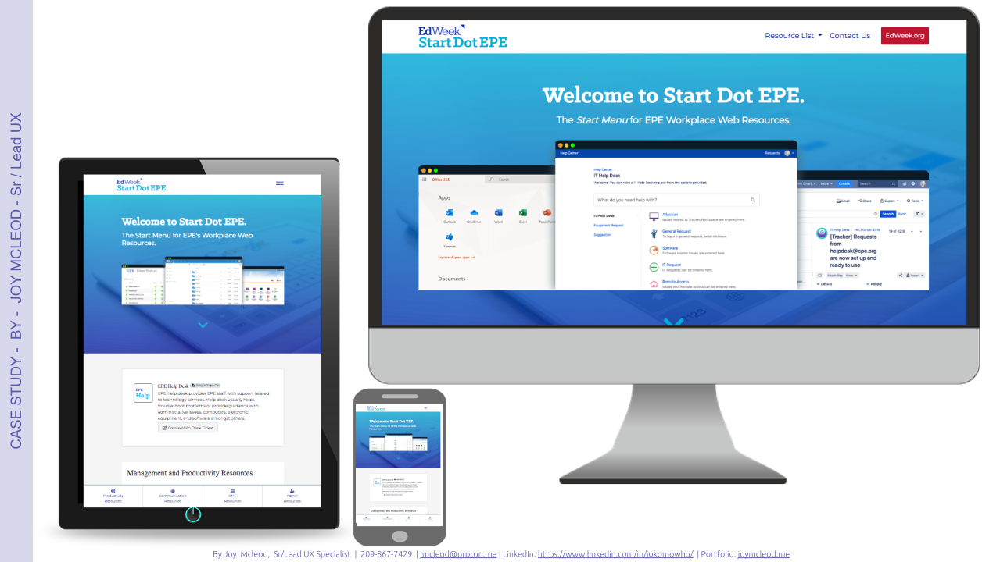
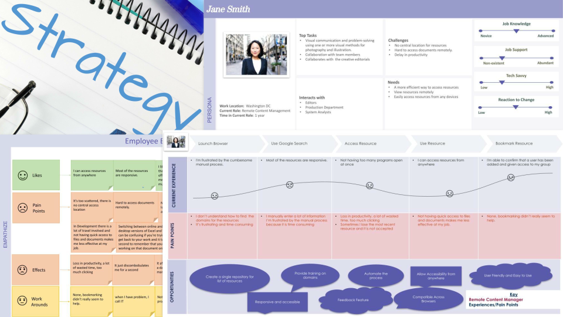
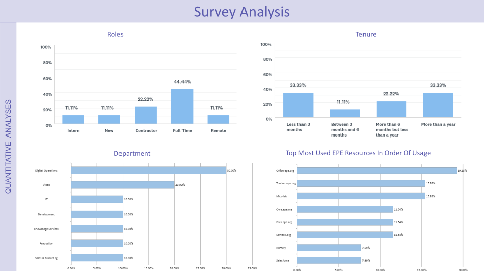
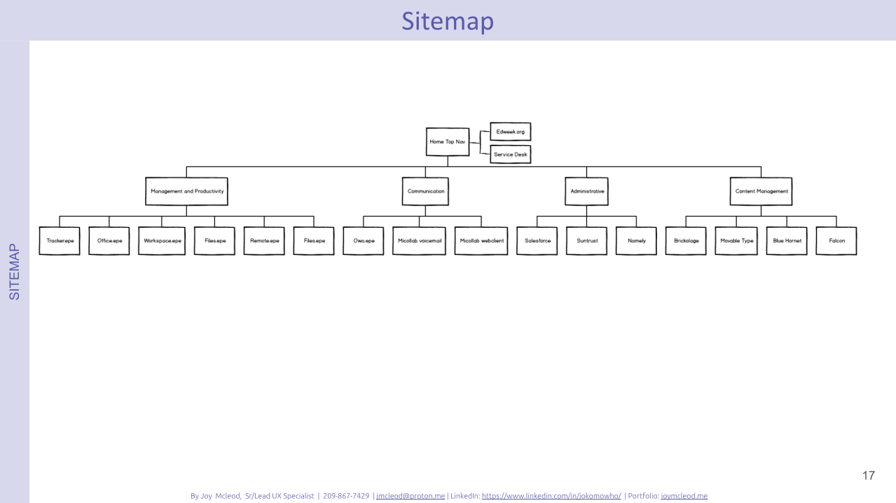
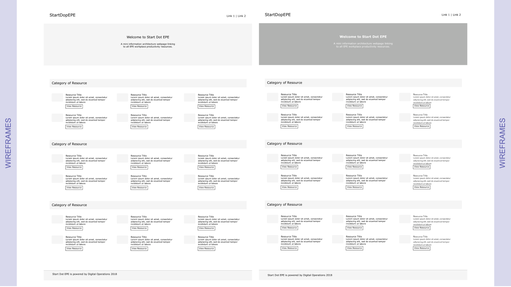

<style>
* {box-sizing: border-box}
body {font-family: Verdana, sans-serif; margin:0}
.mySlides {padding-left: ;
  padding-right: 4em;}
img {vertical-align: middle;}
h2.sub-head{
  color: #000 !important;
  font-size: 22px !important;
  font-weight: 400 !important;
  margin-top: 3em;
}
.list-style{
  padding-left: 2em;
}
h4, span.strong{
  font-weight: bold !important;
}
/* On smaller screens, decrease text size */
@media only screen and (max-width: 300px) {
  .prev, .next,.text {font-size: 11px}
}
.back-container{
  margin-top: 4em;
  width: 80%;

}
.case-studies-back-button{
  text-decoration: none; padding: .5em; border-radius: 7px; font-size: 15px; color: #000; background-color: ; padding: 1em; border:1px solid #000;
}
</style>
<header id="home-header" style="background-image: url({{ site.baseurl }}{{ site.sidebar_image }});">
  <div class="top-container" >
    <div class="container">
       <div class="style-element">
        <!--<br>-->
        <!---->
          <h1 style="font-family:lobster">{{ site.title }} <span style="display: none;" class="mobile-title"> &middot; Sr/Lead UX </span></h1>
          <h3 class="style mobile-header" style="margin-bottom: 1.5em;">Senior UX &middot; Lead UX  &middot; Principal UX </h3>
          <h3 class="style">
            <a href="index.html" class="side-menu"> Home</a> 
            <a href="about.html" class="side-menu"> Skills and Tools</a>
            <a href="case-studies.html" class="side-menu " style="font-weight: bold;"> Case Studies</a> 
            <a href="https://www.jmcleod.me/images/resume-branding.pdf" target="_blank" class="side-menu"> Resume Brand</a>
            <!--<a href="#" > Contact Me</a><br>-->
          </h3>
        </div>
        
    </div>
  </div>
  
</header>
<article>
  <div class="container">
     <div class="portfolio content" >
        <h2 class="posts">SDE Case Study</h2>
        <hr>
        <h2 class="sub-head">Overview</h2>
          <p>
            StartDot EPE is an organization’s intranet web based product aiming to produce a mini information architecture webpage for a specific organization that will serve as a
            centralized base linking to all of the organization’s workplace productivity resources. These resources include but are not limited to; accessing documents
            remotely, productivity tools, communication and collaboration tools, e.t.c
          </p>
          <div class="portfolio-images content-child">
            <div class="mySlides">
              
              <p>&nbsp;</p>
            </div>
          </div>
          <div class="content-child">
            <h2 class="sub-head">The Problem</h2>
            <ul class="list-style">
              <li>No central location for resources. </li>
              <li>Hard to access documents remotely.</li>
              <li>Time consuming to track down resources.</li>
              <li>Delay in productivity, learnability and slow progress as a new role.</li>
            </ul>
            <h2 class="sub-head">The Solution</h2>
              <p>
                Provided seamless access to both internal and external users without requiring any software downloads. 

                Seamlessly interface with the existing data warehouse application, enabling smooth data integration and accessibility. The solution is built with a user-friendly and intuitive design, requiring no prior training for users to navigate effectively.

                To enhance user engagement, the solution includes a feedback feature, allowing users to share their experiences and suggestions. Additionally, the design is aesthetically pleasing, ensuring a visually appealing and professional look.

                For broader accessibility, the solution is compatible across all major browsers and designed to be responsive and mobile-friendly, ensuring an optimal experience on various devices.

                Lastly, SEO analytics tools is integrated to track and analyze user behavior, providing valuable insights for continuous improvement and optimization.
              </p>
            <h2 class="sub-head">Roles & Responsibilities:</h2>
            <ul class="list-style">
              <li>UX Design Lead, Research & Strategist</li>
              <li>Wireframing & Prototyping</li>
              <li>Usability Testing</li>
              <li>Design System Implementation</li>
            </ul>
            <h2 class="sub-head">My UX Process</h2>
            <p>
              In order to create a well-defined User Experience (UX) process to ensure that products are user-centered, intuitive, and effective. I incorporated strategy, research, design, testing, and iteration. Below is a breakdown of the Strategy and Research phases, which lay the foundation to the success of this initiative.
            </p>
            <h2 class="sub-head">Strategy & Research</h2>
            <p>Sample of my deliverables for Strategy & Research deliverables below: This is a collage of the Empathy Map, User Personas, Journey Map.</p>
          <div class="mySlides">
            
          </div>
          <h2 class="sub-head">Quantitative Analysis</h2>
            <p>
              The goal of this quantitative UX analysis is to measure the effectiveness, usability, and adoption of StartDot EPE as a centralized information architecture webpage for workplace productivity. We assess key metrics to evaluate user behavior, engagement, and performance.
            </p>
          <div class="mySlides">
            
          </div>
        </div><br>
        <div class="content-child">
          <h2 class="sub-head">Design Phase</h2>
         <p><span class="strong">Sample of my deliverables for Design Phase:</span> This includes Information Architechture Site Map, Style Guides, Wireframes and High Fidelity Prototye.</p>
          <div class="content-child">
            <h2 class="sub-head">Information Architecture/Flow</h2>
            <p>
              To create a user-friendly and intuitive information architecture, I leveraged card sorting to understand how users naturally categorize and organize content. The process involved both open and closed card sorting sessions, allowing participants to either define their own categories or sort content into predefined groups.
            </p>
            <div class="mySlides">
              
            </div>
          </div>
          <div class="content-child">
            <h2 class="sub-head">Low-Medium Fidelity Wireframes</h2>
            <p>
              To streamline the design process and gather early user feedback, I utilized low to medium-fidelity wireframes to visualize and validate core functionalities before high-fidelity design and development.
            </p>
            <div class="mySlides">
              
            </div>
          </div>
          <div class="content-child">
            <h2 class="sub-head">High Fidelity Prototype</h2>
            <p>
              To bridge the gap between design concepts and final implementation, I utilized high-fidelity prototypes to create realistic, interactive experiences that closely resembled the final product.
            </p>
            <h4><strong>Approach:</strong></h4>
            <ol class="list-style">
                <li><span class="strong">Pixel-Perfect Designs:</span> Created visually polished screens using tools like Figma and Adobe XD, ensuring brand consistency and adherence to design guidelines.</li>
                <li><span class="strong">Interactive Prototyping:</span> Added clickable interactions and transitions to simulate real user workflows, providing an accurate representation of the final product.</li>
                <li><span class="strong">User Testing & Validation:</span> Conducted usability tests with stakeholders and end-users to assess ease of use, navigation, and task completion efficiency.</li>
                <li><span class="strong">Stakeholder Buy-In:</span> Presented interactive prototypes to executives, product managers, and developers to align on design intent and functionality.</li>
                <li><span class="strong">Handoff to Development:</span> Provided detailed design specs, style guides, and component documentation, ensuring seamless implementation by the development team.</li>
            </ol>
            <br>
            <div class="mySlides">
              
            </div> <br>
            <h4>Result and Impact</h4>
            <ol class="list-style">
                <li><span class="strong">Enhanced User Feedback:</span> Allowed users to interact with a near-final experience, leading to more actionable insights.</li>
                <li><span class="strong">Reduced Development Risks:</span> Minimized ambiguity, ensuring developers had a clear vision of interactions and UI behavior.</li>
                <li><span class="strong">Stronger Stakeholder Alignment:</span> Facilitated better decision-making by showcasing realistic designs rather than static mockups.</li>
                <li><span class="strong">Faster Time-to-Market:</span> Enabled early iteration and refinement, preventing costly changes during development.</li>
            </ol>

          </div>
          <div class="back-container">
            <a href="case-studies.html" class="case-studies-back-button">
               < Back to Portfolio Case Study List
            </a>
          </div>
        </div>
          
    </div> 
    <br>
   

      <!-- <a class="mybutton" href="https://www.jmcleod.me/images/resume-branding.pdf" target="_blank"> View Resume Brand</a> -->

  </div> 


</article>


